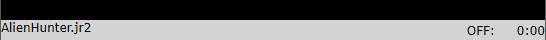
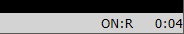
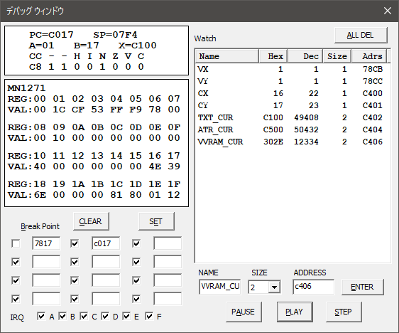
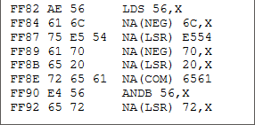
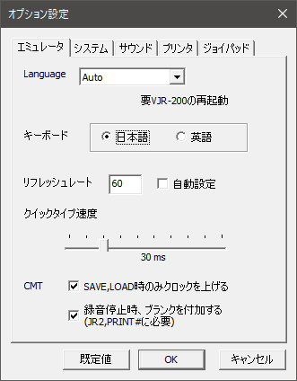
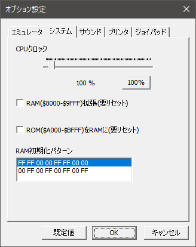
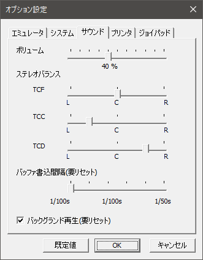
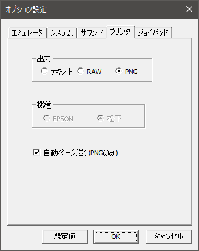
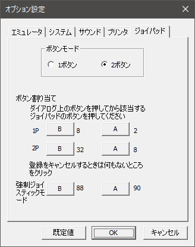

VJR200 トップページは こちら
| 英数キー | 無変換 または Page Down |
| GRAPH キー | 変換 または Page Up |
| カナキー | ひらがなカタカナ または End |
| BREAK キー | Esc または F11 |
英語キーボード使用時
| ￥｜キー | バックスラッシュキー |
| ]｝キー | F7 |
| ＿ロキー | F8 |

左からマウントされているファイル名、リモート端子の状態（ON/OFF）、読み書き（R/W）、タイムカウンタとなります。
ロード中は以下のようになります。

CJR または JR2 ファイルをマウントします。
これは危険な機能なので注意して使ってください。BASIC、マシン語のファイルを直接メモリに書き込みます。よって一瞬で終了しますが、それまで実行していたものにお構いなく書き込みますから、不都合が起きる可能性もあります。使う前にリセットすることをお勧めします。またプログラムの中から LOAD を実行するような場合は使えません（JR-200U 用の海外物はすべてアウト）。
使えるケースとしては LOAD、MLOAD を手動で実行するような場合です。複数の LOAD、MLOAD を重ねて実行できます。
ありがちな失敗としては、リセット直後の Ready が出ていない状態でメニューを操作すると、本体の初期化が終わっていない状態で読み込んでしまうため、正常に実行できなくなります。
【追記】現在は SAVE, MSAVE を使って保存することもできます。より厳密な保存を望む方は、そちらを使ってください。
SAVE, MSAVE を代替する機能です。ダイアログに JR 用ファイル名を指定し、BASIC を保存する場合は「BASIC を保存」を押してください。マシン語、バイナリデータを保存する場合は、スタートアドレス、エンドアドレスを指定して「バイナリ保存」を押してください。
CJR, JR2 ファイルをアンマウントします。
JR2 ファイルを新規作成します。
一つ先、または一つ前のプログラム、データを頭出しします。JR2 ファイルのみ有効です。
※ 特殊フォーマットのファイルでは頭出しできないことがあります。
テープの先頭に移動します。CJR, JR2 ともに有効です。
プリンタ出力を PNG にし、かつ「自動ページ送り」をオフにしている場合に、手動でページ送り＝PNG ファイルとして出力します。何も印字されてない場合は出力しません。
BASIC のコードが書かれたテキストファイルを読み込み、自動でエミュレータに入力します。入力中のみ自動で CPU クロックを最大にし、終了すると元に戻ります。読み込めるテキストファイルは最大で 65536 バイトまで。入力を途中で止めたい場合は Esc を押してください。
入力途中でエラーが出る場合は、オプションダイアログの「クイックタイプ速度」を遅くしてください。
メモリのイメージをドキュメントフォルダに "dump.bin" の名前で書きだします。
逆アセンブルウィンドウに表示されるアドレスを文字列に変換するための定義ファイルをロードします。ファイルは以下のフォーマットで作成してください。
| ラベル名（20字まで） | 一字以上のスペース、またはタブ | アドレス(16進表記、0～FFFF、"0x"はつけないこと) |
| KEY_SCAN | e8cb | |
| CLS | ec7f |
ステートセーブは、マウントしているファイルと関連付けて保存されます。abc.cjr というファイルのマウント中のステートファイルは、同じフォルダに abc.cjr_0.sta という名前で9まで保存されます。
ただし、マウントしてない状態のステートデータは AppData\Local\FIND_JR\VJR200\ 以下に nomount_0.sta といった名前で保存されます。注意すべき点として、「高速ロード」を使用したときのステートセーブは、すべてマウントなしのデータを共有します。各ゲームごとにステートファイルを分けたい場合は高速ロードを使わずにマウント→LOAD, MLOAD してください。複数のファイルが必要な場合は JR2 化することをお勧めします（CJR だとロード順によって関連付けるファイルが変わってしまう）。
前半の10個は「マウント」で使用したファイル、後半の10個は「CJR 高速ロード」で使用したファイルが表示されます。
ウィンドウサイズを変更します。
フルスクリーンで表示します。フルスクリーンを解除するには Alt+Enter か、ダブルクリックしてください。
JR-200 実機のビデオ出力は実測で15%ほど幅が縮小されているので、それを再現するのが「ビデオ出力相当」。ただしピクセルが整数倍ではなくなるので、見づらくなることがあります。3倍、またはフルスクリーンの表示でスムージングの併用を推奨します。
スムージングの有無を設定します。
プリンタ LED アイコン、ステータスバーの表示・非表示を設定します。
グラフ文字を入力するための仮想キーボードを表示します。
カナモード時、ローマ字入力を可能にします。ただしプログラムがカナのキャラクターコードをリアルタイムキースキャン（PICK, STICK）で取得している場合は、正しく動作しません。その場合は通常のカナ入力にしてください。
キーボード操作にしか対応していないゲームを、ジョイパッドで操作できるようにします。具体的には Windows 上のジョイパッドの入力を、カーソルキーと、二つまでのキー（スペースキー、あるいは X と Z など）入力に変換します。したがってカーソルキー以外に3つ以上のキーを使うようなソフトの操作は実用的ではありません。すべてのゲームを操作できるわけではないのでご了承ください。
このモードを使用する前に、まずジョイパッドの設定で A、Bボタンに適当なジョイパッドのボタンを割り当てておく必要があります。キー割り当ての方法についてはオプションの項目を参照してください。
なお、強制ジョイスティックモードのオンは保存されません（キー割り当ては保存されます）。起動のたびに設定してください。

* 以前はブレークポイント設定時は「SET」を押さないと変更が反映されませんでしたが、1.4.1 以降はチェックボックスを変更したときとエディットボックスで Enter を押したとき（＝フォーカスが移動したとき）は自動的に反映されるため、その場合は「SET」を押す必要はありません。
CPUと周辺チップ MN1271 のレジスタの内容を表示しながら、ステップ実行することができます。またブレークポイントを設定することもできます。エディットボックス左のチェックボックスを外すと、一時的にブレークポイントを無効にできます。
下部にある IRQ で、ステップ実行中に TCA ～ TCF の IRQ を発生するかどうかを指定できます。チェックを外すとステップ実行時にかぎり IRQ が発生しません。ただしチェックしても割り込みフラグ ($C81E - $C81F) がセットされていないと割り込み処理は実行されないので注意してください。
またデバッグ・ウィンドウを開いていても、通常実行時はこの指定は影響しません。
ウォッチは1バイト、または2バイトの領域をリスト形式で表示できます。ただしウォッチの値はポーズを押したとき、ブレークポイントで止まった時、ステップ実行を押したときにしか変化しません。そのため常時更新されるメモリウィンドウと値が一致しないことがあります。
ウォッチを個別に削除したいときは、右クリックして「削除」メニューを選択するか、項目を選択して DEL キーを押してください。
メモリの内容をリアルタイムに表示します。
実行位置のコードを逆アセンブルして表示します。移動はできません。たまにニーモニックに NA(***) のようなものが表示されることがあります。

これは仕様上は MN1800A の未定義の領域ですが、実際はカッコ内の命令として実行されると推測されるものです。あくまで個人的な解析なので間違っている可能性があります。
タイトルバーに FPS と CPU 速度を表示します。主に私が使います。
実行に必要な ROM ファイル、フォントファイルを指定します。

・Language
メニューとメッセージの言語を日本語、または英語に切り替えます。Auto の場合は、ユーザー・ロケール ID(LCID) に従い日本のみ日本語、それ以外は英語にします。通常は Auto でいいでしょう。
・キーボード
英語キーボード（101/102 系）を利用する場合は英語に設定してください。ただし、OS のキーボード設定が日本語キーボード（106/109 系）設定のままでは想定した配列になりません。足りないキーは F7, F8 に割り当てています。英語キーボードにしても記号が ASCII 配列になるわけではありません。
・リフレッシュレート
VJR-200 は VSYNC を基準に動作しているため、垂直同期周波数を正しく取得できていないと実行速度が狂ってしまいます。その場合は自動設定のチェックを外し手動で設定してください。
・クイックタイプ速度
クイックタイプ入力速度を 10ms～100ms まで設定できます。エラーが起きる場合は遅くしてください。
・SAVE,LOAD時のみクロックを上げる
SAVE, LOAD 時のみ CPU のクロックを 1000% にして高速に処理できるようにします。終了すると元のクロックに戻ります。
・録音停止時、ブランクを付加する
JR2 フォーマットに記録時、リモート端子に停止の指示が出るたびに500バイトのブランクを付加します。これは PRINT# したデータを正常に読み込むために必要です。PRINT# を使用しなければチェックを外してもかまいません。

・CPUクロック
50%～1000% まで指定できます。あまり大きく変更すると不都合が生じるかもしれません。
・RAM 拡張
$A000～$BFFF の ROM を RAM に変更すると、MON を実行したときと同じ状態になります。
・RAM 初期化パターン
RAM 初期化パターンを次の2種類から選べます。
(1) FF FF 00 00 FF FF 00 00
アドレス n000 から256バイトごとに "FF FF 00 00 FF FF 00 00" と "00 00 FF FF 00 00 FF FF" を繰り返します。
(2) 00 FF 00 FF 00 FF 00 FF
アドレス n000 から128バイトごとに "00 FF 00 FF 00 FF 00 FF" と "FF 00 FF 00 FF 00 FF 00" を繰り返します。

・ステレオバランス
サウンド出力を各 ch ごとに左右のパンを設定します。TCF が SOUND 文や警告音で使われるのでセンターに設定し、TCC, TCD を左右に振る設定をお勧めします。
・バッファ書込間隔
DirectSound バッファの書き込み間隔を 1/100s から 1/50s まで指定できます。初期値は 1/60s です。値を小さくするほど遅延が小さくなりますが、環境によっては動作が不安定になったり、異常終了することがあるかもしれません。
もし正常に起動しなくなってしまった場合は、（ユーザーフォルダ）\AppData\Local\FIND_JR\VJR200\ にある （あれば）vjr200.ini と vjr200.xml を削除する（すべての設定が初期化されます）。あるいは（あれば）vjr200.ini を削除しさらに vjr200.xml 内の <SBufferWriteInterval>数字</SBufferWriteInterval>の数字部分を
<SBufferWriteInterval>60</SBufferWriteInterval>
と書きかえてください。
・バックグランド再生
ウィンドウがインアクティブになっても再生を続けます。

・出力
RAW に設定するとプリンタ出力ポートに書き込まれたデータをフィルタリングせずに出力します。
・機種
プリンタの機種を設定します。RAW 出力時のみ有効です。
・自動ページ送り（PNGのみ）
PNG 出力の場合、500ms データ出力がなかった時に終了と判断してページ送りし PNG ファイルを出力します。それでは問題が起きる場合や、1枚の画像にハードコピーとリストをまとめたいといった場合はチェックを外して、[ファイル]－[プリンタ ページ送り]で手動ページ送りをしてください。

・ボタンモード
2ボタンに対応するソフトを使うとき以外は1ボタンにしておくことをお勧めします。
なお、2ボタン対応ソフトを作る際の注意事項があるので、必ず
を読んでください。
・ボタン割り当て
1ボタンで使う場合は設定する必要はありません。
・強制ジョイスティックモード
このモードを使用する場合は、ジョイパッドの設定で 1P の A、Bボタンに適当なジョイパッドのボタンを割り当てておく必要があります。ボタンモード自体は1ボタンのままでも構いません。
割り当てが済んだらダイアログ上の A ボタンを押してから、割り当てたいキーボード上のキーを押してください。登録が済んだら B ボタンついても同様に登録してください。
強制ジョイスティックモードは、ボタンモードが1ボタンでも2ボタンでも同様に動作します。
［TOP PAGE］